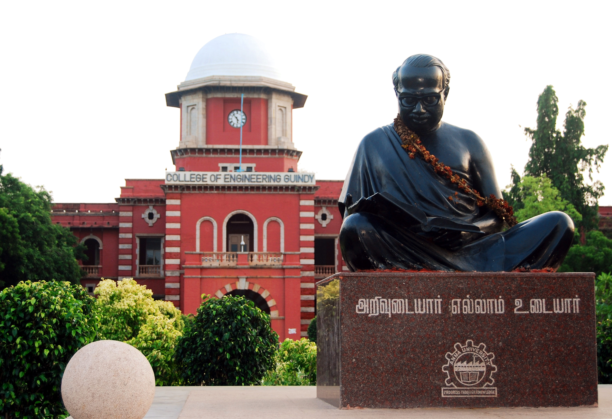

Affliated Colleges
The university's main campus is located in Chennai and extends over 185 acres adjoining the Adyar River and the Raj Bhavan. It houses College of Engineering, Guindy, Alagappa College of Technology, School of Architecture and Planning, three technical departments of the University of Madras and another campus are located in Chrompet (Madras Institute of Technology).
The university has satellite campuses in Coimbatore, Tiruchirappalli, Madurai and Tirunelveli. The university also runs engineering colleges at Villupuram, Tindivanam, Arani and Kanchipuram in Chennai region, Erode and Bargur in Coimbatore region, Panruti, Pattukkottai, Thirukkuvalai and Ariyalur in Tiruchirapalli region, Ramanathapuram and Dindigul in Madurai region, Nagercoil and Thoothukudi in Tirunelveli region.
